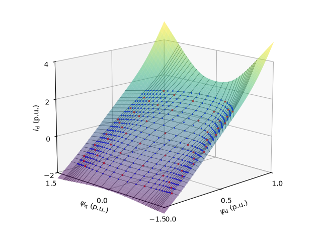
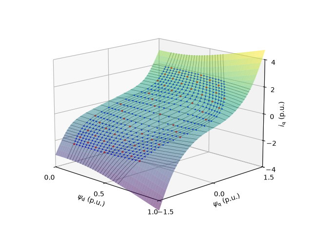

Note
Go to the end to download the full example code.
5.6-kW PM-SyRM, train current map, measured data#
This example trains a GradNet current map for a four-pole 5.6-kW PM synchronous reluctance machine (Baldor ECS101M0H7EF4) from a measured dataset.
from pathlib import Path
import numpy as np
import motulator.drive.gradnet as gn
from motulator.drive import utils
Set nominal and base values.
nom = utils.NominalValues(U=460, I=8.8, f=60, P=5.6e3, tau=29.7)
base = utils.BaseValues.from_nominal(nom, n_p=2)
Set up the paths and parameters.
p = Path(__file__).resolve().parent if "__file__" in globals() else Path.cwd()
dataset_path = p / "datasets/baldor_meas.npz"
trained_path = p / "trained_models/baldor_meas_curr_map_squareplus_d12_sub10.pth"
subsample = 10
activation = gn.Squareplus
Train the model.
if not trained_path.exists():
gn.train_gradnet(
dataset_path=dataset_path,
base=base,
save_model_path=trained_path,
epochs=20000,
subsample=subsample,
embed_dim=12,
activation=activation,
)
Create the GradNet model and its callable.
model = gn.load_gradnet(trained_path, activation=activation)
current_map_fcn = gn.CurrentMap(model)
Load the dataset for comparison and split it into training and validation sets.
train_data, val_data = gn.get_training_data(
str(dataset_path), subsample=subsample, base=base
)
Plot the current map.
# Sample the map on a grid for plotting
current_map = gn.sample_map_on_grid(
current_map_fcn,
map_type="current_map",
d_range=np.linspace(0 * base.psi, 1 * base.psi, 50),
q_range=np.linspace(-1.5 * base.psi, 1.5 * base.psi, 50),
)
# Constant current contours corresponding to the measured dataset, for visualization
i_d_levels = np.arange(-20, 22, 2) / base.i
i_q_levels = np.arange(-26, 28, 2) / base.i
current_loci_levels = (i_d_levels, i_q_levels)
gn.plot_maps(
current_map,
"d",
base,
lims={"x": (0, 1), "y": (-1.5, 1.5), "z": (-2, 4)},
ticks={"x": [0, 0.5, 1], "y": [-1.5, 0, 1.5], "z": [-2, 0, 2, 4]},
raw_data=[val_data, train_data],
current_loci=True,
current_loci_levels=current_loci_levels,
)
gn.plot_maps(
current_map,
"q",
base,
lims={"x": (0, 1), "y": (-1.5, 1.5), "z": (-4, 4)},
ticks={"x": [0, 0.5, 1], "y": [-1.5, 0, 1.5], "z": [-4, -2, 0, 2, 4]},
raw_data=[val_data, train_data],
current_loci=True,
current_loci_levels=current_loci_levels,
)


Print statistical error metrics.
gn.print_current_map_errors_meas(current_map_fcn, val_data, base=base)
Current-map error metrics: rmse=0.016 p.u., max=0.079 p.u., std=0.010 p.u.
Total running time of the script: (0 minutes 0.335 seconds)